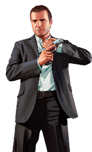
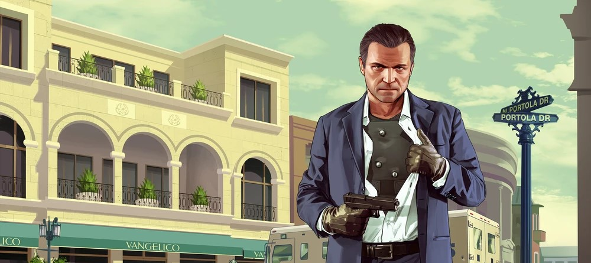

Michael De Santa is a retired bank robber living a luxurious yet dysfunctional life in the suburbs of Los Santos.
After entering a witness protection program, he struggles to balance his desire for a quiet family life with his addiction to the thrills of his criminal past.
Michael’s sharp mind and tactical approach to heists make him a natural leader, though his hot-headedness often lands him in trouble.

The mastermind seeking redemption in chaos
Michael De Santa, born Michael Townley, is a retired bank robber trying to lead a peaceful life in Los Santos under the federal witness protection program. Once a notorious figure in the world of crime, Michael now resides in a luxurious mansion with his dysfunctional family, struggling to adapt to a mundane lifestyle far removed from the adrenaline-filled heists of his past.
Despite his wealth, Michael’s life is far from idyllic. His marriage to Amanda is strained, marked by frequent arguments and mutual infidelity. His children, Tracey and Jimmy, resent him, viewing him as an overbearing and outdated father. Michael’s longing for the thrill of his old life, coupled with his inability to connect with his family, creates a deep sense of dissatisfaction and midlife crisis.
As the story unfolds, Michael’s attempts to live a crime-free life are disrupted when he crosses paths with Franklin Clinton and Trevor Philips. His return to criminal activities ignites his old talents, showcasing his tactical mind, expertise in planning heists, and sharp shooting skills.
However, his journey also forces him to confront the mistakes of his past, the fragile relationships with his family, and his complicated friendship with Trevor. Michael’s narrative is one of redemption and self-discovery, blending moments of introspection with high-stakes action.

Michel De Santa as visible on the loading screen of the game.
You forget a thousand things every day, pal.
Make sure this is one of 'em.
Michael Townley
This quote, spoken by Michael under his alias Michael Townley during the North Yankton heist, reflects his calm yet intimidating demeanor. It highlights his ability to stay composed under pressure, a trait central to his character throughout the story.